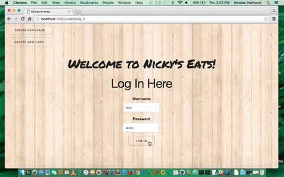

News Desk

A Rails Application that uses Nokogiri, D3.js and unique parsing algorithims to gather Newspaper and magazine headlines from across the world and create data visulaizations based on the frequency of keywords.
Rain or Shine

A MEAN stack application that aggregates data from 12 separate APIs and renders to the client a seven day weather forecast with music sports and theater recommendations for each day based on the weather. Data is dynamically searched and rendered based on the current data and location and can be filtered based on the user’s preferences. The application also uses JSON webtoken authentication and each user can save slected events and view them on their profile page.
Nicky's Eats
Simulated Restaurant management system built with Rails and Postrgres SQL. The database is built with multiple tables with one to one and one to many relationships allowing a user to manage orders across many groups of customers. Different users have access to different data and user with administrative privileges can edit the menu and access all user data.
Home